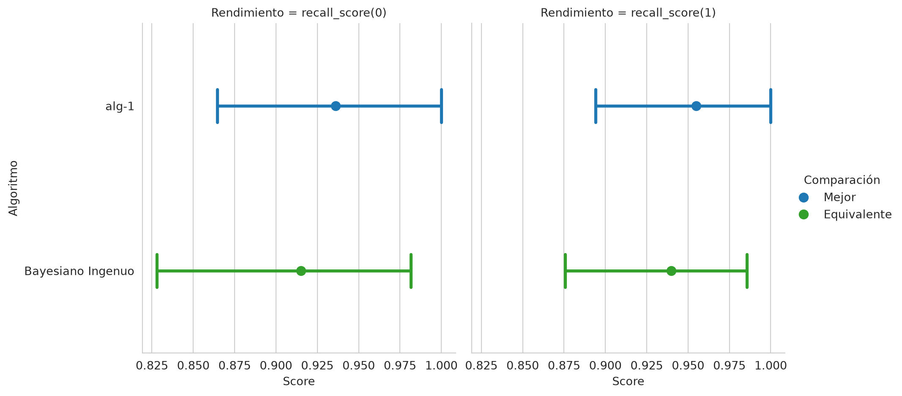
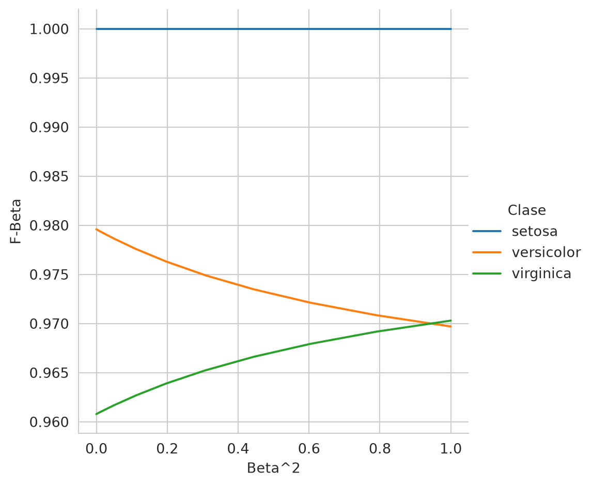
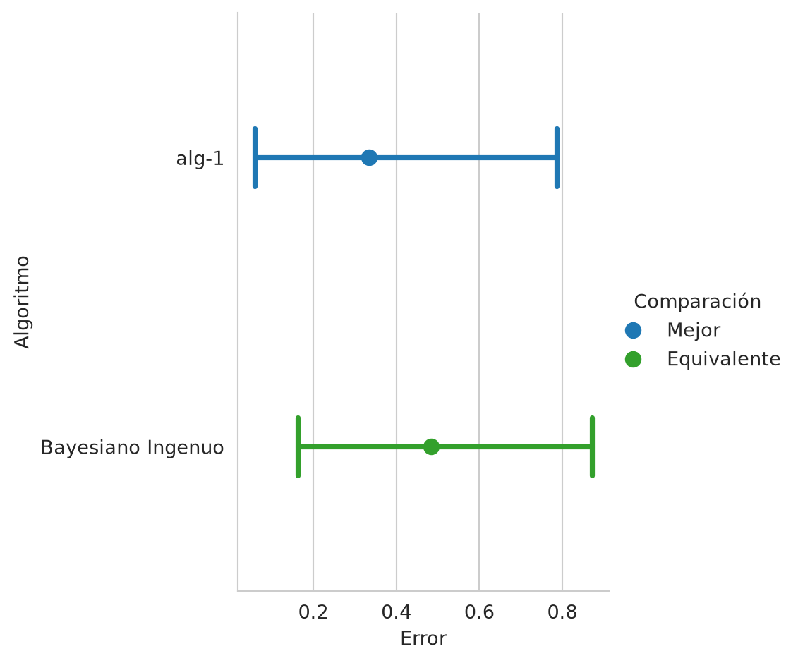
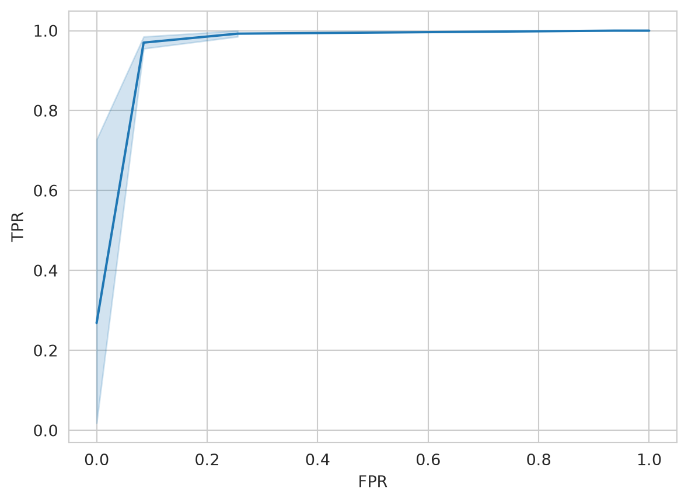
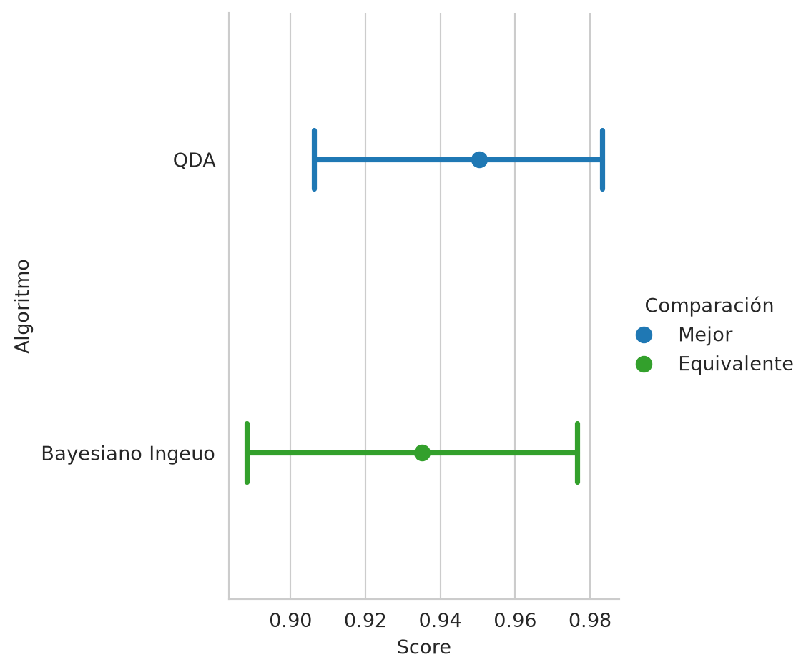
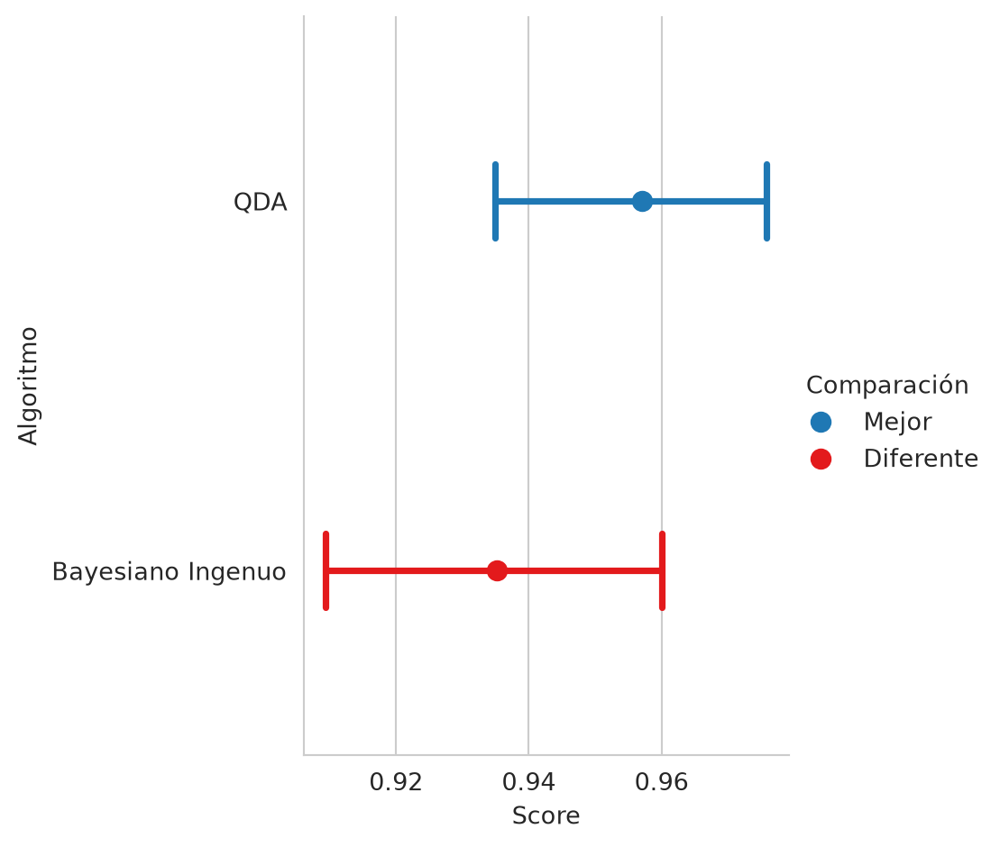

from sklearn.naive_bayes import GaussianNB
from sklearn.discriminant_analysis import QuadraticDiscriminantAnalysis
from sklearn.linear_model import LinearRegression
from sklearn.model_selection import train_test_split
from sklearn.datasets import load_breast_cancer,\
load_diabetes
from sklearn.model_selection import train_test_split, KFold
from sklearn import metrics
from CompStats.metrics import accuracy_score, recall_score,\
precision_score, f1_score, log_loss,\
roc_auc_score, mean_squared_error,\
mean_absolute_error, r2_score
import numpy as np
import pandas as pd
from matplotlib import pylab as plt
import seaborn as sns2 Rendimiento
El objetivo de la unidad es contrastar las características de diferentes medidas de rendimiento en aprendizaje supervisado, así como simular un procedimiento de aprendizaje supervisado mediante los conjuntos de entrenamiento, prueba y validación. Este capítulo se puede leer sin haber estudiado los algoritmos de clasificación y regresión: los modelos que aparecen en los ejemplos (Capítulo 4) se utilizan como cajas negras que se entrenan con fit y predicen con predict, y su funcionamiento se describirá más adelante.
Paquetes usados
2.1 Introducción
Es importante conocer el rendimiento del algoritmo de aprendizaje computacional desarrollado. En aprendizaje supervisado la medición se hace mediante el conjunto de prueba, \(\mathcal G\), mientras que en aprendizaje no supervisado es posible utilizar el conjunto de entrenamiento \(\mathcal T\) o utilizar un conjunto de prueba. Es importante notar que aunque en el proceso de entrenamiento puede usar una función de rendimiento para estimar o encontrar el algoritmo que modela los datos, es importante complementar esta medición con otras funciones de rendimiento. Esta unidad describe algunas de las medidas más utilizadas para medir el rendimiento de algoritmos de clasificación y regresión.
Para el análisis de políticas públicas esta pregunta es central: un modelo que se utilice para focalizar un programa o priorizar inspecciones debe evaluarse con datos que no se usaron para construirlo, de la misma manera que un estimador econométrico se valida con datos distintos a los de su ajuste. El primer paso es, entonces, describir cómo se separan los datos.
2.2 Conjunto de Entrenamiento y Prueba
Se parte de un conjunto de datos \(\mathcal D = (\mathcal X, \mathcal Y)\) donde cada renglón de \(\mathcal X\) es una realización de la variable aleatoria de entrada y cada elemento de \(\mathcal Y\) es la realización de la variable que se desea predecir. El objetivo en aprendizaje supervisado es diseñar un algoritmo (función en este caso) que modele la relación entre \(\mathcal X\) y \(\mathcal Y\), y para conocer qué tan bien lo hace es necesario medir su rendimiento en instancias que no han sido vistas en el entrenamiento. Medirlo con los mismos datos que se usaron para ajustar el algoritmo produce estimaciones optimistas, porque el algoritmo puede memorizar particularidades de esos datos.
En consecuencia, los datos se dividen en dos conjuntos: el conjunto de entrenamiento, \(\mathcal T\), que se utiliza para encontrar el algoritmo, y el conjunto de prueba, \(\mathcal G\), que se utiliza únicamente para medir el rendimiento. \(\mathcal G\) se crea a partir de \(\mathcal D\) de tal manera que \(\mathcal G \cap \mathcal T = \emptyset\) y \(\mathcal D = \mathcal G \cup \mathcal T.\) La siguiente instrucción se puede utilizar para dividir los datos de Breast Cancer Wisconsin (descritos más adelante en la Sección 4.7) en estos conjuntos; en la Sección 2.3.9 se utilizan para medir el rendimiento de un clasificador.
D, y = load_breast_cancer(return_X_y=True)
T, G, y_t, y_g = train_test_split(D, y,
test_size=0.2,
random_state=0)El parámetro test_size indica la proporción del tamaño de conjunto \(\mathcal G\) en relación con el conjunto \(\mathcal D\) y random_state fija la semilla para que la división sea reproducible.
2.3 Clasificación
En clasificación existen diferentes medidas de rendimiento, algunas de ellas son exactitud (accuracy), precisión (precision), cobertura (recall), y \(F_1\), entre otras. Sebastiani (2015) describe de manera axiomática algunas de estas medidas y se dan recomendaciones en general sobre medidas de rendimiento para clasificadores.
Varias de las medidas de rendimiento toman como insume la Tabla de Confusión (Tabla 2.1), la cual contiene la información del proceso de clasificación. La siguiente tabla muestra la estructura de esta tabla para un problema binario, donde se tiene una clase positiva identificada con \(p\) y una clase negativa (\(n\)). La variable \(\mathcal Y\) indica las clases reales y la variable \(\mathcal{\hat Y}\) representa la estimación (predicción) hecha por el clasificador. Adicionalmente, la tabla se puede extender a \(K\) clases siguiendo la misma estructura; la diagonal contienen los elementos correctamente identificados y los elementos fuera de la diagonal muestra los errores.
| \(\mathcal{\hat Y}=p\) | \(\mathcal{\hat Y}=n\) | |
|---|---|---|
| \(\mathcal Y=p\) | Verdaderos Pos. | Falsos Neg. |
| \(\mathcal Y=n\) | Falsos Pos. | Verdaderos Neg. |
La tabla se puede ver como valores nominales, es decir contar el número de ejemplos clasificados como verdaderos positivos o como proporción de tal manera que las cuatro celdas sumen \(1\). En esta descripción se asume que son proporcionen, esto porque se seguirá una interpretación probabilística, descrita por Goutte y Gaussier (2005), para presentar las diferentes medidas de rendimiento.
Viendo la Tabla 2.1 como una proporción y combinando con la interpretación probabilística la tabla quedaría de la siguiente manera.
| \(\mathcal{\hat Y}=p\) | \(\mathcal{\hat Y}=n\) | |
|---|---|---|
| \(\mathcal Y=p\) | \(\mathbb P(\mathcal Y=p, \mathcal{\hat Y=p})\) | \(\mathbb P(\mathcal Y=p, \mathcal{\hat Y=n})\) |
| \(\mathcal Y=n\) | \(\mathbb P(\mathcal Y=n, \mathcal{\hat Y=p})\) | \(\mathbb P(\mathcal Y=n, \mathcal{\hat Y=n})\) |
Partiendo de la Tabla 2.2 se puede calcular la probabilidad marginal de cualquier variable y también las probabilidades condicionales, por ejemplo \(\mathbb P(\mathcal Y=p) = \sum_k \mathbb P(\mathcal Y=p, \mathcal{\hat Y=k})\) que es la suma de los elementos del primer renglón de la tabla anterior.
2.3.1 Error
Se empieza la descripción con el error de clasificación (el cual se retoma desde la teoría de decisión en la Sección 3.4, más adelante) que es la proporción de errores y se puede definir como
\[ \textsf{error}(\mathcal Y, \mathcal{\hat Y}) = 1 - \textsf{accuracy}(\mathcal Y, \mathcal{\hat Y}). \]
2.3.2 Exactitud (Accuracy)
El error se define mediante la exactitud. La exactitud es la proporción de ejemplos correctamente clasificados, utilizando la notación de la tabla de confusión quedaría como:
\[ \textsf{accuracy}(\mathcal Y, \mathcal{\hat Y}) = \mathbb P(\mathcal Y=p, \mathcal{\hat Y}=p) + \mathbb P(\mathcal Y=n, \mathcal{\hat Y}=n). \]
Una manera equivalente de ver la exactitud es utilizando la probabilidad condicional, es decir,
\[ \begin{split} \textsf{accuracy}(\mathcal Y, \mathcal{\hat Y}) &= \mathbb P( \mathcal{\hat Y}=p \mid \mathcal Y=p)\mathbb P(\mathcal Y=p)\\ &+ \mathbb P(\mathcal{\hat Y}=n \mid \mathcal Y=n)\mathbb P(\mathcal Y=n). \end{split} \]
Esta manera ayuda a entender el caso cuando se tiene una clase con muchos ejemplos, e.g., \(\mathbb P(\mathcal Y=p) \gg \mathbb P(\mathcal Y=n),\) en ese caso se ve que la exactitud está dominado por el primer término, i.e., \(\mathbb P( \mathcal{\hat Y}=p \mid \mathcal Y=p)\mathbb P(\mathcal Y=p).\) En este caso, la manera trivial de optimizar la exactitud es crear un clasificador que siempre regrese la clase \(p.\) Por esta razón la exactitud no es una medida adecuada cuando las clases son desbalanciadas, es buena medida cuando \(\mathbb P(\mathcal Y=p) \approx \mathbb P(\mathcal Y=n).\)
2.3.3 Coberturba (Recall)
La siguiente medida de rendimiento es el recall, este calcula la probabilidad de ejemplos correctamente clasificados como \(p\) dados todos los ejemplos que se tienen de la clase \(p\). En base a esta ecuación se puede observar que un algoritmo trivial con el máximo valor de recall solamente tiene que predecir como clase \(p\) todos los elementos.
La segunda ecuación ayuda a medir en base de la tabla de confusión.
\[ \begin{split} \textsf{recall}_p(\mathcal Y, \mathcal{\hat Y}) &= \mathbb P(\mathcal{\hat Y}=p \mid \mathcal{Y}=p) \\ &= \frac{\mathbb P(\mathcal{\hat Y}=p, \mathcal{Y}=p)}{\mathbb P(\mathcal Y=p)} \end{split} \tag{2.1}\]
2.3.4 Precisión (Precision)
La precisión complementa el recall, al calcular la probabilidad de los ejemplos correctamente clasificados como \(p\) dadas las predicciones de los ejemplos. Es decir, en la probabilidad condicional se observa que se conocen las predicciones positivas y de esas predicciones se mide si estas son correctamente clasificadas. Basándose en esto, se puede ver que una manera de generar un algoritmo competitivo en esta media corresponde a predecir la clase solo cuando exista una gran seguridad de la clase.
\[ \begin{split} \textsf{precision}_p(\mathcal Y, \mathcal{\hat Y}) &= \mathbb P(\mathcal Y=p \mid \mathcal{\hat Y}=p)\\ &= \frac{\mathbb P(\mathcal Y=p, \mathcal{\hat Y}=p)}{\mathbb P(\mathcal{\hat Y}=p)} \end{split} \tag{2.2}\]
2.3.5 \(F_\beta\)
Finalmente, una manera de combinar el recall (Ecuación 2.1) con la precisión (Ecuación 2.2) es la medida \(F_\beta\), es probable que esta medida se reconozca más cuando \(\beta=1\). La idea de \(\beta\) es ponderar el peso que se le quiere dar a la precisión con respecto al recall.
\[ F^p_\beta(\mathcal Y, \mathcal{\hat Y}) = (1 + \beta^2) \frac{\textsf{precision}_p(\mathcal Y, \mathcal{\hat Y}) \cdot \textsf{recall}_p(\mathcal Y, \mathcal{\hat Y})}{\beta^2 \cdot \textsf{precision}_p(\mathcal Y, \mathcal{\hat Y}) + \textsf{recall}_p(\mathcal Y, \mathcal{\hat Y})} \tag{2.3}\]
2.3.6 Medidas Macro
En las definiciones de precisión (Ecuación 2.2), recall (Ecuación 2.1) y \(F_\beta\) (Ecuación 2.3) se ha usado un subíndice y superíndice con la letra \(p\) esto es para indicar que la medida se está realizando con respecto a la clase \(p\). Esto ayuda también a ilustrar que en un problema de \(K\) clases se tendrán \(K\) diferentes medidas de precisión, recall y \(F_\beta;\) cada una de esas medidas corresponde a cada clase.
En ocasiones es importante tener solamente una medida que englobe el rendimiento en el caso de los tres rendimientos que se han mencionado, se puede calcular su versión macro que es la media de la medida. Esto es para un problema de \(K\) clases la precisión, recall y \(F_\beta\) se definen de la siguiente manera.
\[ \textsf{macro-precision}(\mathcal Y, \mathcal{\hat Y}) = \frac{1}{K}\sum_{k} \textsf{precision}_k(\mathcal Y, \mathcal{\hat Y}), \]
\[ \textsf{macro-recall}(\mathcal Y, \mathcal{\hat Y}) = \frac{1}{K}\sum_{k} \textsf{recall}_k(\mathcal Y, \mathcal{\hat Y}), \]
\[ \textsf{macro-}F_\beta(\mathcal Y, \mathcal{\hat Y}) = \frac{1}{K}\sum_{k} F^k_\beta(\mathcal Y, \mathcal{\hat Y}). \]
2.3.7 Entropía Cruzada
Una función de costo que ha sido muy utilizada en redes neuronales y en particular en aprendizaje profundo es la Entropía Cruzada (Cross Entropy) que para una distribución discreta se define como: \(H(P, Q) = - \sum_x P(x) \log Q(x)\).
Para cada ejemplo \(x\) se tiene \(\mathbb P(\mathcal Y=k \mid \mathcal X=x)\) y el clasificador predice \(\mathbb{\hat P}(\mathcal Y=k \mid \mathcal X=x).\) Utilizando estas definiciones se puede decir que \(P=\mathbb P\) y \(Q=\mathbb{\hat P}\) en la definición de entropía cruzada; entonces
\[ \begin{split} H(\mathbb P(\mathcal Y \mid \mathcal X=x) &, \mathbb{\hat P}(\mathcal Y \mid \mathcal X=x)) =\\ &-\sum_k^K \mathbb P(\mathcal Y=k \mid \mathcal X=x) \log \mathbb{\hat P}(\mathcal Y=k \mid \mathcal X=x). \end{split} \]
Finalmente la medida de rendimiento quedaría como \(\sum_x H(\mathbb P(\mathcal Y \mid \mathcal X=x), \mathbb{\hat P}(\mathcal Y \mid \mathcal X=x)).\)
2.3.8 Área Bajo la Curva ROC
El área bajo la curva ROC (Relative Operating Characteristic) es una medida de rendimiento que también está pasada en la probabilidad a posteriori \(\mathbb P(\mathcal Y \mid \mathcal X)\) con la característica de que la clase se selecciona en base a un umbral \(\rho\). Es decir, dado un ejemplo \(x\), este ejemplo pertenece a la clase \(p\) si \(\mathbb P(\mathcal Y=p \mid \mathcal X=x) \geq \rho.\)
Se observa que modificando el umbral \(\rho\) se tienen diferentes tablas de confusión, para cada tabla de confusión posible se calcula la tasa de verdaderos positivos (TPR) que corresponde al recall (Sección 2.3.3), i.e., \(\mathbb P(\mathcal{\hat Y}=p \mid \mathcal Y=p),\) y la tasa de falsos positivos (FPR) que es \(\mathbb P(\mathcal{\hat Y}=p \mid \mathcal Y=n).\) Cada par de TPR y FPR representan un punto de la curva ROC. El rendimiento corresponde al área debajo de la curva delimitada por los pares TPR y FPR.
2.3.9 Ejemplo
El ejemplo de Breast Cancer Wisconsin (Sección 4.7) se utiliza para ilustrar el uso de la medidas de rendimiento presentadas hasta el momento. En el siguiente código se observa el procedimiento para cargar los datos, después los datos se dividen en entrenamiento y prueba (Sección 2.2); se entrena el algoritmo Analizador Discriminante Cuadrático y se predice el conjunto de prueba. Por ahora este algoritmo se utiliza como una caja negra: es un clasificador que se entrena con fit y predice con predict; su funcionamiento se describe en la Sección 4.5.1, que se verá más adelante.
D, y = load_breast_cancer(return_X_y=True)
T, G, y_t, y_g = train_test_split(D, y,
random_state=0,
test_size=0.2)
gaussian = QuadraticDiscriminantAnalysis(reg_param=1e-3).fit(T, y_t)
hy_gaussian = gaussian.predict(G)
NotaCompStats
Para medir el rendimiento de los algoritmos se utilizará la librería CompStats descrita en Nava-Muñoz et al. (2024). Esta librería permite obtener el error estándar de la estadística calculada, así como hacer una comparación entre el rendimiento de diferentes algoritmos incluyendo la significacia estadísitca.
Para medir la exactitud del algoritmo anterior, se utiliza la función accuracy_score tal y como se muestra en el siguiente código.
accuracy = accuracy_score(y_g, hy_gaussian)La exactitud estimada del algoritmo es \(0.9474\) con un error estándar de \(0.0206.\)
Las medidas de recall, precision y f1 se presentan en la Tabla 2.3, en la última columna se presenta el promedio (i.e., macro) de cada una de las medidas.
recall = recall_score(y_g, hy_gaussian,
average=None)
precision = precision_score(y_g, hy_gaussian,
average=None)
f1 = f1_score(y_g, hy_gaussian,
average=None)| \(\mathcal Y=0\) | \(\mathcal Y=1\) | Promedio (macro) | |
|---|---|---|---|
recall |
\(0.9362\) | \(0.9552\) | \(0.9457\) |
precision |
\(0.9362\) | \(0.9552\) | \(0.9457\) |
f1 |
\(0.9362\) | \(0.9552\) | \(0.9457\) |
NotaComparación de cobertura por clase
Continuando con el rendimiento y utilizando las características de la librería, es posible comparar el rendimiento entre dos o más algoritmos. En este ejemplo, se comparará el rendimiento en la cobertura por clase contra el algoritmo Bayesiano Ingenuo, otro clasificador que también se usa como caja negra y que se describirá en la Sección 4.6. En las siguientes dos lineas se entrena el algoritmo y se predice las clases en el conjunto de prueba.
naive = GaussianNB().fit(T, y_t)
hy_naive = naive.predict(G)La Figura 2.1 muestra la comparación de la cobertura por clase de los dos algoritmos, la figura también indica el algoritmo que obtuvo el mejor rendimiento y si la diferencia entre los rendimiento es estadísticamente significante.
recall(hy_naive, name="Bayesiano Ingenuo")
recall.plot(comp_legend='Comparación',
winner_legend='Mejor',
tie_legend='Equivalente',
loser_legend='Diferente',
alg_legend='Algoritmo',
var_name='Rendimiento')
TipActividad
Medir el rendimiento del algoritmo Bayesiano Ingenuo (que se describirá en la Sección 4.6) en el problema del del Iris (ver Sección B.3.2) utilizando la función \(F_\beta\) (Sección 2.3.5) variando \(\beta\) entre \([0, 1],\) tal y como se muestra en la Figura 2.2

Por otro lado, para calcular el valor de la entropía cruzada se requiere la predicción de la probabilidad de cada clase, lo cual se obtiene con el siguiente instrucción
prob = gaussian.predict_proba(G)donde la variable prob tiene la probabilidad por clase y el valor de la entropía se estima utilizando la función log_loss, e.g.,
entropia = log_loss(y_g, prob)teniendo un valor de \(0.3246\) con un error estándar de \(0.1901.\)
TipActividad
Comparar el rendimiento de Bayesiano Ingenuo (que se describirá en la Sección 4.6) utilizando la entropía cruzada, tal y como se muestra en la Figura 2.3.

Complementando la información de las medidas que se calculan mediante la posteriori se encuentra la curva ROC, la cual se puede calcular con el siguiente código y se muestra en la Figura 2.4
fpr, tpr, thresholds = metrics.roc_curve(y_g, prob[:, 1])
df = pd.DataFrame(dict(FPR=fpr, TPR=tpr))
sns.set_style('whitegrid')
fig = sns.lineplot(df, x='FPR', y='TPR')
El valor de área bajo la curva se calcula con la siguiente instrucción
auc_score = roc_auc_score(y_g, prob[:, 1])teniendo un valor de \(0.9936\) con un error estándar de \(0.0052.\)
2.4 Regresión
Con respecto a regresión las siguientes funciones son utilizadas como medidas de rendimiento.
Error cuadrático medio (Mean Square Error):
\[ \textsf{mse}(\mathcal Y, \mathcal{\hat Y}) = \frac{1}{N} \sum_{i=1}^N (\mathcal Y_i - \mathcal{\hat Y}_i)^2. \tag{2.4}\]
Error absoluto medio (Mean Absolute Error):
\[ \textsf{mae}(\mathcal Y, \mathcal{\hat Y}) = \frac{1}{N} \sum_{i=1}^N \mid \mathcal Y_i - \mathcal{\hat Y}_i \mid. \tag{2.5}\]
Media del porcentaje de error absoluto: \[ \textsf{mape}(\mathcal Y, \mathcal{\hat Y}) = \frac{1}{N} \sum_{i=1}^N \mid \frac{\mathcal Y_i - \mathcal{\hat Y}_i}{\mathcal Y_i}\mid. \tag{2.6}\]
La proporción de la varianza explicada por el modelo:
\[ R^2(\mathcal Y, \mathcal{\hat Y}) = 1 - \frac{\sum_{i=1}^N (\mathcal Y_i - \mathcal{\hat Y}_i)^2)}{\sum_{i=1}^N (\mathcal Y_i - \mathcal{\bar Y})^2)}. \tag{2.7}\]
2.4.1 Ejemplo
Las medidas anteriores se ejemplifican utilizando el ejemplo de diabetes (Sección 4.9.1) que se puede descargar y modelar mediante una regresión lineal, la cual se utiliza como caja negra y se describirá en la Sección 4.9, de la siguiente manera.
X, y = load_diabetes(return_X_y=True)
T, G, y_t, y_g = train_test_split(X, y,
random_state=0,
test_size=0.2)
m = LinearRegression().fit(T, y_t) La predicción en el conjunto de prueba sería:
hy = m.predict(G)Las diferentes medidas de rendimiento para problemas de regresión se puede calcular de la siguiente manera.
El error cuadrático medio (Ecuación 2.4), se calcula mediante la siguiente función
mse = mean_squared_error(y_g, hy)teniendo un valor de \(3424.2593\) con un error estándar de \(547.1482.\) La función que implementa el error absoluto medio (Ecuación 2.5) se muestra en la siguiente instrucción
mae = mean_absolute_error(y_g, hy)teniendo un valor de \(46.1736\) con un error estándar de \(3.9911.\) La varianza explicada por el modelo (Ecuación 2.7) se estima con el siguiente código
r2 = r2_score(y_g, hy)teniendo un valor de \(0.3322\) con un error estándar de \(0.1069.\)
2.5 Conjunto de Validación y Validación Cruzada
Además de los conjuntos de Entrenamiento y Prueba (Sección 2.2), i.e., \(\mathcal T\) y \(\mathcal G\), es necesario contar con otro conjunto que se utiliza para optimizar los hiperparámetros del algoritmo de aprendizaje. En particular estos conjuntos se definieron utilizando todos los datos \(\mathcal D\) con lo que se especifica el problema.
La mayoría de algoritmos de aprendizaje tiene hiperparámetros que pueden ser ajustados para optimizar su comportamiento al conjunto de datos que se está analizando. Estos hiperparámetros pueden estar dentro del algoritmo o pueden ser modificaciones al conjunto de datos para adecuarlos al algoritmo. El segundo caso es el que se analizará en esta unidad. Es decir, se seleccionarán las variables que facilitan el aprendizaje.
Para optimizar los parámetros es necesario medir el rendimiento del algoritmo, es decir, observar como se comporta el algoritmo en el proceso de predicción. La manera trivial sería utilizar el conjunto de prueba \(\mathcal G\) para medir el rendimiento. Pero es necesario recordar que este conjunto no debe ser visto durante el aprendizaje y la optimización de los parámetros es parte de ese proceso. Si se usara \(\mathcal G\) entonces dejaría de ser el conjunto de prueba y se tendría que seleccionar otro conjunto de prueba.
Entonces para optimizar los parámetros del algoritmo se selecciona del conjunto de entrenamiento, i.e., \(\mathcal T\), el conjunto de validación, \(\mathcal V\). Este conjunto tiene la característica que \(\mathcal T \cap \mathcal V \cap \mathcal G = \emptyset\) y \(\mathcal T \cup \mathcal V \cup \mathcal G = \mathcal D.\) Una manera de realizar estos es seleccionar primeramente el conjunto de prueba \(\mathcal G\) y de los datos restantes generar los conjuntos de entrenamiento \(\mathcal T\) y validación \(\mathcal V.\)
Para ejemplificar esta idea se utiliza el ejemplo de Breast Cancer Wisconsin (Sección 4.7) utilizando un Clasificador Bayesiano donde el hiperparámetro es si se utilizar un Bayesiano Ingenuo o se estima la matriz de covarianza.
El primer paso es obtener los datos del problema, lo cual se muestra en la siguiente instrucción.
D, y = load_breast_cancer(return_X_y=True)Con los datos \(\mathcal D\) se genera el conjunto de prueba \(\mathcal G\) y los datos para estimar los parámetros y optimizar los hiperparámetros del algoritmo. En la variable T se tiene los datos para encontrar el algoritmo y en G se tiene el conjunto de prueba.
T, G, y_t, y_g = train_test_split(D, y,
random_state=0,
test_size=0.2)Los datos de entrenamiento y validación se generan de manera equivalente tal como se muestra en la siguiente instrucción. El conjunto de validación (\(\mathcal V\)) se encuentra en la variable V y la variable dependiente en y_v.
T, V, y_t, y_v = train_test_split(T, y_t,
random_state=0,
test_size=0.3)En este momento ya se tienen todos los elementos para medir el rendimiento de cada hiperparámetro. Empezando por el clasificador con la matriz de covarianza completa, donde la primera linea entrena el clasificador, en la segunda se predicen las clases en el conjunto de validación y en la tercera se calcula el promedio de cobertura por clase (i.e., macro-recall).
gaussian = QuadraticDiscriminantAnalysis(reg_param=1e-3).fit(T, y_t)
hy_gaussian = gaussian.predict(V)
recall = recall_score(y_v, hy_gaussian, average='macro', name='QDA')La segunda opción es utilizar un clasificador Bayesiano Ingenuo tal y como se muestra en las siguientes instrucciones.
ingenuo = GaussianNB().fit(T, y_t)
hy_ingenuo = ingenuo.predict(V)Faltaría solamente medir la cobertura en la predicciones que se tienen en la variable hy_ingenuo tal y como se muestra en la primera línea del siguiente código y la gráfica de la comparación se indica en la segunda línea. La Figura 2.5 muestra la comparación de rendimiento indicando la significancia estadística de la comparación.
recall(hy_ingenuo, name="Bayesiano Ingeuo")
recall.plot(comp_legend='Comparación',
winner_legend='Mejor',
tie_legend='Equivalente',
loser_legend='Diferente',
alg_legend='Algoritmo',
var_name='Rendimiento')
Comparando el rendimiento de los dos hiperparámetros se observa cual de los dos modelos obtiene el mejor rendimiento. Con el fin de completar el ejemplo se describe calcular el rendimiento en \(\mathcal G\) del algoritmo con la matriz de covarianza completa. El procedimiento utilizado es
gaussian = QuadraticDiscriminantAnalysis(
reg_param=1e-3
).fit(np.concatenate((T, V)),
np.concatenate((y_t, y_v)))
hy_gaussian = gaussian.predict(G)
recall = recall_score(y_g, hy_gaussian, average='macro')dando un valor de \(0.9457\) con un error estándar de \(0.0232.\)
2.5.1 k-Iteraciones de Validación Cruzada
Cuando se cuenta con pocos datos para medir el rendimiento del algoritmo es común utilizar la técnica de k-fold cross-validation la cual consiste en partir \(k\) veces el conjunto de entrenamiento para generar \(k\) conjuntos de \(0.9474\) con un error estándar de \(0.0206.\) entrenamiento y validación.
La idea se ilustra con la siguiente tabla, donde se asume que los datos son divididos en 5 bloques (\(k=5\)), cada columna de la tabla ilustra los datos de ese bloque. Si los datos se dividen en \(k=5\) bloques, entonces existen \(k\) iteraciones que son representadas por cada renglón de la siguiente tabla, quitando el encabezado de la misma. La letra en cada celda identifica el uso que se le dará a esos datos en la respectiva iteración, es decir, \(\mathcal T\) representa que se usará como conjunto de entrenamiento y \(\mathcal V\) se usa para identificar aquellos datos que se usarán como conjunto de validación.
El objetivo es entrenar y probar el rendimiento del algoritmo \(k\) veces usando las particiones en cada renglón. Es decir, la primera vez se usan los datos de la primera columna como el conjunto de validación, y el resto de columnas, \([2, 3, 4, 5]\), como conjunto de entrenamiento para estimar los parámetros del algoritmo. En la segunda iteración se usan los datos del segundo renglón donde se observa que los datos en la cuarta columna corresponden al conjunto de validación y los datos en las columnas \([1, 2, 3, 5]\) son usados como conjunto de prueba. Las iteraciones siguen hasta que todos los datos fueron utilizados en una ocasión como conjunto de validación.
| 1 | 2 | 3 | 4 | 5 |
|---|---|---|---|---|
| \(\mathcal V\) | \(\mathcal T\) | \(\mathcal T\) | \(\mathcal T\) | \(\mathcal T\) |
| \(\mathcal T\) | \(\mathcal T\) | \(\mathcal T\) | \(\mathcal V\) | \(\mathcal T\) |
| \(\mathcal T\) | \(\mathcal T\) | \(\mathcal V\) | \(\mathcal T\) | \(\mathcal T\) |
| \(\mathcal T\) | \(\mathcal T\) | \(\mathcal T\) | \(\mathcal T\) | \(\mathcal V\) |
| \(\mathcal T\) | \(\mathcal V\) | \(\mathcal T\) | \(\mathcal T\) | \(\mathcal T\) |
Se utiliza el mismo problema para medir el rendimiento del hiperparámetro del clasificador Gausiano. Lo primero es seleccionar el conjunto de prueba (\(\mathcal G\)) que se realiza con el siguiente código.
T, G, y_t, y_g = train_test_split(D, y,
random_state=0,
test_size=0.2)La validación cruzada con k-iteraciones se puede realizar con la clase KFold de la siguiente manera. La primera línea crear una variable para guardar el rendimiento. En la segunda línea se inicializa el procedimiento indicando que los datos sean tomados al azar. Después se realiza el ciclo con las \(k\) iteraciones, para cada iteración se genera un índice ts que indica cuales son los datos del conjunto de entrenamiento y vs que corresponde a los datos de validación. Se estiman los parámetros usando ts tal y como se observa en la cuarta línea. Habiendo estimado los parámetros se predicen los datos del conjunto de validación (5 línea). Se mide la cobertura promedio (i.e. macro-recall) en la última linea.
hy_gaussian = np.zeros_like(y_t)
kfold = KFold(shuffle=True, random_state=0)
for ts, vs in kfold.split(T):
gaussian = QuadraticDiscriminantAnalysis(
reg_param=1e-3
).fit(T[ts], y_t[ts])
hy_gaussian[vs] = gaussian.predict(T[vs])
recall = recall_score(y_t, hy_gaussian, average='macro', name="QDA") Un procedimiento equivalente se realiza para el caso del clasificador Bayesiano Ingenuo tal y como se muestra a continuación.
kfold = KFold(shuffle=True, random_state=0)
hy_naive = np.zeros_like(y_t)
for ts, vs in kfold.split(T):
nb = GaussianNB().fit(T[ts], y_t[ts])
hy_naive[vs] = nb.predict(T[vs])
recall = recall(hy_naive, name="Bayesiano Ingenuo") La Figura 2.6 muestra la comparación de los dos algoritmos utilizando la cobertura por clase.

El último paso sería calcular el rendimiento en el conjunto \(\mathcal G\) lo cual fue presentado anteriormente.